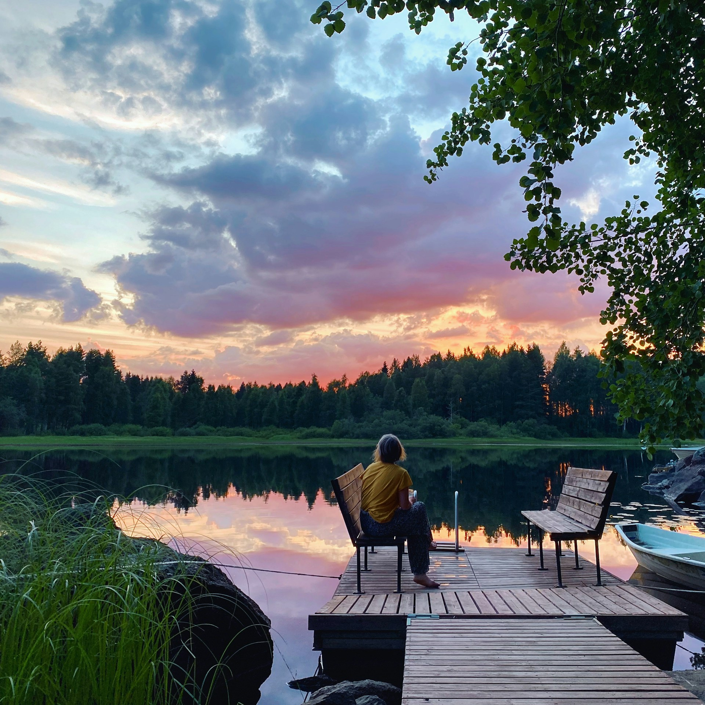
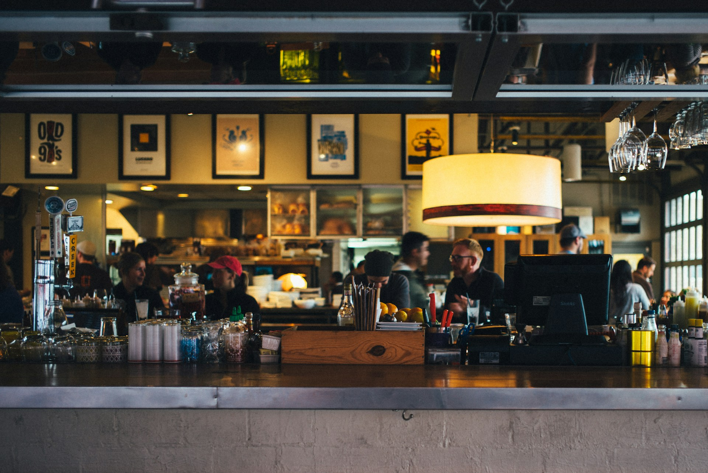

THE JOURNEY BEGINS

In 1971, Vihreä was founded in Helsinki, Finland by Jooseppi and Anja Korhonen. As a vegan couple, they made it their mission to provide more inclusive dining options for vegetarians and vegans alike. The initial menu was very limited in its vegetarian options, only offering a few dishes inspired by Finnish culture.

